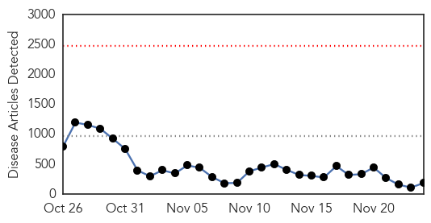
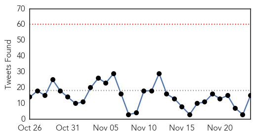
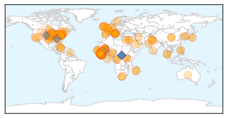
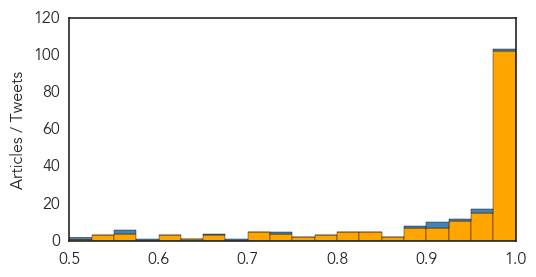
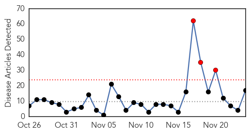

Ebola
30-Day Web Trend
0 alerts, 0 warnings

30-Day Twitter Trend
4 alerts, 0 warnings

Article Locations
Article Confidences
Top Articles:
- 1.000
- Italian doctor contracts Ebola in Sierra Leone
- 1.000
- More Ebola cases surface in Mali
- 1.000
- Joint mission to Mali in support of Ebola response
- 1.000
- US looking past Ebola to prepare for next outbreak
- 1.000
- U.S. looking past Ebola to prepare for next outbreak
- 1.000
- NationalJournal
- 1.000
- Italian Doctor Tests Positive For Ebola In Sierra Leone
- 1.000
- HEALTHBEAT: US seeks to shore up world's blind spots in preparation for next disease outbreak
- 1.000
- U.S. looking past Ebola to prepare for next big outbreak
- 1.000
- Doctor working in Sierra Leone is Italy's first Ebola case
- 1.000
- CDC Looks Ahead To The Next Epidemic
- 1.000
- Emergency NGO doctor is first Italian to contract Ebola
- 1.000
- The next Ebola? Health officials try to prepare for future outbreaks
- 1.000
- Ebola outbreak: Doctor becomes first Italian to catch Ebola
- 1.000
- First suspected Ebola case emerges in Faisalabad
- 1.000
- First suspected Ebola case emerges in Pakistan
- 1.000
- US looking past Ebola to prepare for next outbreak - National
- 1.000
- Ebola crisis now 'stable' in Guinea, WHO says
- 1.000
- US looking past Ebola to prepare for next outbreak
- 0.999
- Government announces new funding to fight Ebola in West Africa
- 0.999
- Mali confirms eighth Ebola case, monitoring 271 people
- 0.999
- Government announces new funding to fight Ebola in West Africa
- 0.999
- First Ebola case for Italy as doctor working in Sierra Leone contracts disease
- 0.999
- Congo Ebola Outbreak Over, West Africa Epidemic Still Raging
- 0.999
- Guinea Stable While Mali Redoubles Efforts To Trace Contacts
- 0.999
- NewLink, Merck deal boosts prospects for Ebola vaccine
- 0.999
- 99 tested for Ebola in England: PHE
- 0.999
- UN: Deadline to curb Ebola will not be met
- 0.999
- 2 children test negative for Ebola in Columbus - Cleveland 19 News
- 0.999
- Mali confirms new Ebola case; toll 5
- 0.999
- Government announces new funding to fight Ebola in West Africa - Sierra Leone
- 0.999
- Mali confirms eighth Ebola case - MyNorthwest
- 0.998
- Swedish expert says Ebola risk has reduced
- 0.998
- Italian doctor gets Ebola in Sierra Leone
- 0.998
- The Herald: News
- 0.998
- Merck Partners With NewLink To Speed Up Work On Ebola Vaccine : Shots
- 0.998
- First case of Italian contracting Ebola -update
- 0.998
- Health officials have monitored 5 West Africa travelers in Utah
- 0.998
- Doctor working in Sierra Leone is Italy's first Ebola case
- 0.998
- Spread of infectious diseases being propelled by globalisation
- 0.998
- Italian Doctor Working in Sierra Leone Tests Positive For Ebola
- 0.998
- Lassa fever deaths reported in Benin
- 0.998
- 800 people under Ebola surveillance in Zim
- 0.997
- Italian doctor in Sierra Leone tests positive for Ebola
- 0.997
- "Dramatic improvement" in Ebola outlook in Liberia -U.S. general
- 0.997
- Spanish expert calls for developing Africa's health systems
- 0.997
- First case of Italian contracting Ebola - update 2
- 0.997
- First suspected Ebola case emerges in Pakistan
- 0.997
- Sudan Vision Daily
- 0.997
- Ebola news: 24 November in 15 seconds
Showing top 50 articles...
Top Tweets:
- 0.986
- RT: africa headlines West Africa: Ebola Crisis Update: [MSF]Since the Ebola outbreak in West Africa was official... http://t.c…
- 0.969
- Sierra Leone, CDC DiseaseDetectives have been testing Ebola samples from two villages there, Bombali & Kumala.
- 0.960
- RT: @AfricaStopEbola we say no Ebola !!! Go africa yes we can !!!!! Stop stop Ebola
- 0.939
- RT: AfricaStopEbola, une chanson porteuse d'espoir contre Ebola
- 0.922
- The suspected Ebola case in Pakistan doesn't sound likely, IMO, because the patient was in a country (Togo) with no known Ebola cases.
- 0.917
- Bénin - Togo : dans les petites localités, le virus Ebola inquiète| @jeune_afrique http://t.co/svyLR2DkRF
- 0.915
- RT: Tiken Jah fakoly et mory kanté. Bénéfices de leur chanson iront à msf dans lutte contre Ebola AfricaStopEbola ht…
- 0.905
- RT: @AfricaStopEbola et nou disons non à l'ebola en afrique
- 0.884
- RT: Suspected Ebola patient in Pakistan is suffering from Dengue Fever. EbolaResponse
- 0.824
- VIDEO. Ebola : les robots, la nouvelle "arme" contre le virus http://t.co/cOgHUhdMvz
- 0.795
- 10 Things You Need to Know About Ebola: 8: Mosquitoes are world’s deadliest animals, but don’t carry Ebola. http://t.co/lE4yzjU4P7
- 0.789
- A journey through the Ebola heartland in Sierra Leone and Guinea http://t.co/SLoUn8syLM TackleEbola
- 0.768
- RT: 10 Things You Need to Know About Ebola: 8: Mosquitoes are world’s deadliest animals, but don’t carry Ebola. http://t.co/lE4yz…
- 0.763
- Ebola, Anarchy, and Failing States: The Crisis in West Africa http://t.co/BFWfklbCTb
- 0.757
- British doctor recalls Ebola horrors in Sierra Leone, HARDtalk - BBC World News http://t.co/UYBXeENBQ9
- 0.752
- RT: AfricaStopEbola, une initiative de chanteurs africains pour lutter contre Ebola, au profit de MSF https://t.co/d2lXZhghMX
- 0.748
- 10 Things You Need to Know About Ebola: 7 People returning from countries w/ Ebola don’t pose a danger to you. http://t.co/1Mfm9n63R6
- 0.733
- RT: "La diffusion de la chanson sera accompagnée de panneaux d'information dans les pays touchés par Ebola" @tikenjahmusic " …
- 0.682
- RT: 2e fois sur ce compte : cette belle chanson pour soutenir la lutte contre Ebola https://t.co/cZq1MCztjz … @MSF_france Afr…
- 0.679
- RT: Dying children in West Africa can't be offered human comfort in their slow, agonising death from Ebola. They need our help @…
- 0.630
- RT: Afrikanska artister gör egen välgörenhetslåt mot ebola, efter BandAid-kritiken. Lyssna här: http://t.co/liq6qnAywg africa…
- 0.628
- 10 Things You Need to Know About Ebola: 10 Your dog or cat is not spreading Ebola. http://t.co/VfdFJF3Qof http://t.co/f6cEjuxd3k
- 0.621
- Ebola: information for sewage and water handlers http://t.co/Fr0Kd4VngH
- 0.620
- Guinée : au coeur du "ground zero" de l'épidémie d'Ebola | @jeune_afrique http://t.co/pPRmmXNZL2
- 0.608
- RT: Derniers préparatifs pour la conférence de presse avec contre Ebola AfricaStopEbola http://t.co/t7D7shx4qi
- 0.579
- In the grip of Ebola, Sierra Leone's sex workers face heightened risk. Our report from Freetown http://t.co/9lrdw819RS
- 0.574
- Ebola is west Africa's 9/11, how TAE started http://t.co/ipSmYfAsjf via
- 0.569
- RT: .@USAID seeks help from makermovement in Ebola outbreak http://t.co/glopg7u9x9…
- 0.567
- RT: Great short video on why Ebola spread in West Africa: http://t.co/VZTVEsPls3 by fightingebola
- 0.554
- Italian doctor tests positive for Ebola in Sierra Leone http://t.co/88xqp2HkyV http://t.co/keb4VTbRTk
- 0.551
- Cuban doctor with Ebola virus in stable condition, Swiss hospital says http://t.co/rMTUg3mNEC TackleEbola http://t.co/zm6opyfdvh
- 0.549
- RT: RT:"D'autres chansons existent,par d'autres artistes africains :de nombreux efforts sont faits contre Ebola.…
- 0.541
- West African Countries at Risk of Ebola Remain on High Alert, says ebolaresponse http://t.co/UevqIIhzGJ
- 0.530
- Ebola is west Africa's 9/11, 19/10/2014, Reya El-Salahi - BBC Radio Nottingham http://t.co/MSCECIiJuK. How TAE started
- 0.528
- U.S. looking past Ebola to prepare for next outbreak | The Rundown | PBS NewsHour http://t.co/8wlYXIhxq9
- 0.517
- RT: Watch this short, informative video on why Ebola spread in West Africa: http://t.co/Lbk7zcaYOr by
- 0.514
- VIRAL HAEMORRHAGIC FEVERS RISK ASSESSMENT | ebola http://t.co/9FDPMARkt2
Influenza
30-Day Web Trend
3 alerts, 0 warnings

30-Day Twitter Trend
1 alerts, 0 warnings

Article Locations

Article Confidences

Top Articles:
- 1.000
- Two children die of the flu in Orange and Pasco counties
- 0.999
- Do you know when and to whom to give each influenza vaccine?
- 0.972
- Flu vaccine less effective against mutant strain
- 0.967
- Europe On Alert Against Possible Avian Flu Outbreak
- 0.964
- Officials: 2 Florida kids die from flu-related illnesses
- 0.910
- Avian Flu in Kerala
- 0.902
- Bird flu outbreak in Kottayam, Alappuzha
- 0.875
- Bird flu outbreak confirmed in Kerala
- 0.870
- New avian flu strain detected in Europe: UN agency
- 0.843
- Bird flu detected in Kuttanad
- 0.835
- New tool detects beginning of flu season
- 0.827
- Inside Toronto > Home
- 0.822
- H1N1 (Swine flu) kills ducks in Kerala, CM Oommen Chandy calls meeting
- 0.744
- This year's flu will make you sicker
- 0.720
- Farms await bird flu test results: Ducks culled
- 0.692
- Kerala’s Kuttanad region in the grip of bird flu scare
- 0.662
- Today's stories from newspapers in London
Top Tweets:
-
No tweets found for Nov 24, 2014